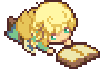

Skip to content
Scruffy Wiki
Home
Initializing search
Scruffy Wiki
Home
Bandar Esok
Bandar Esok
Characters
Characters
Ein
幻颖
蕙伊
蕾
年兽
Emmett
Memi
Factions
Factions
绘声社 （The Storytelling Club）
Locations
Locations
Bandar Esok
Eel Clinic
剩鱼厅
Snippets
Snippets
🧧 Restoran Laut brainstorm
回乡 summary
🧧 年兽's influence
Solo Journalling Games
Solo Journalling Games
Caveat Emptor
Caveat Emptor
Notes on the Boss (Mephistopheles)
Games
Games
Game #1
Ex Novo
Ex Novo
Game#1
Game#1
Events
Map and Factions
Webdev Notes
Webdev Notes
NakedJSX
Performance
Cool Websites
CSS notes
Data Structures
Funny phrases/words
Git and GitHub
Hypermedia Systems
Javascript notes
Navidrome [Uberspace]
npm
On digital gardens
Object Oriented Programming
React
recursion
sortableJS
Testing
The Odin Project
Useful code snippets
Using MkDocs
Gamedev Notes
Gamedev Notes
Loose Ideas
Loose Ideas
Game ideas!
Making small games
PICO-8
PICO-8
Lua and PICO-8 Notes
OOP in PICO-8
Resources
Ideas/Concepts
Ideas/Concepts
Delicious in Dungeon
Proteus
Failure
Failure
On prizes
Bookmarks
Bookmarks
Poems I Like
Welcome to my hypertext garden!

I plant my half-baked ideas here and let them grow.